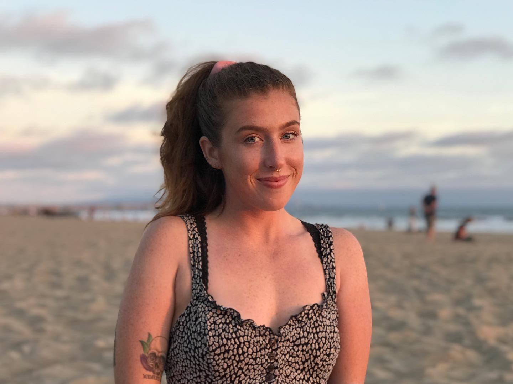

My preferred name is Alex, and I was born and raised in Wilmington, NC. I graduated from the University of North Carolina at Wilmington with a Bachelor's in Biology and a Minor in Chemistry. I am new to software development, but I'm already enjoying the constant oppurtunity for growth and learning. I have worked in ecology, wildlife biology, parks and recreation, customer service, fiberglass boat building, and environmental chemistry.
My pursuit of a career in software development stems from my interest in new skills and my problem-solving nature.
